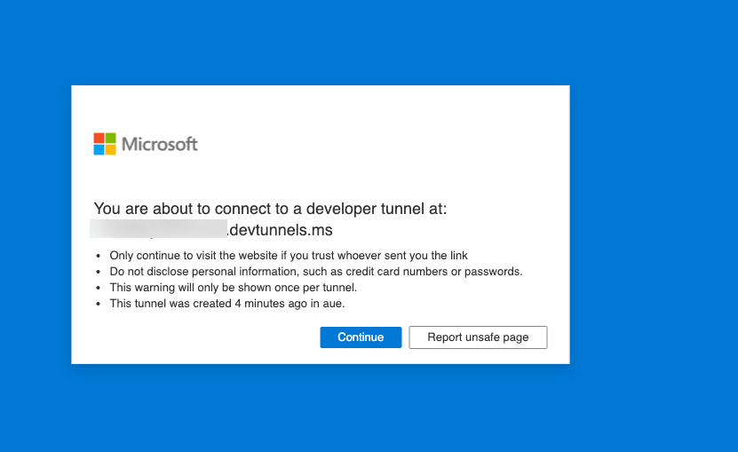
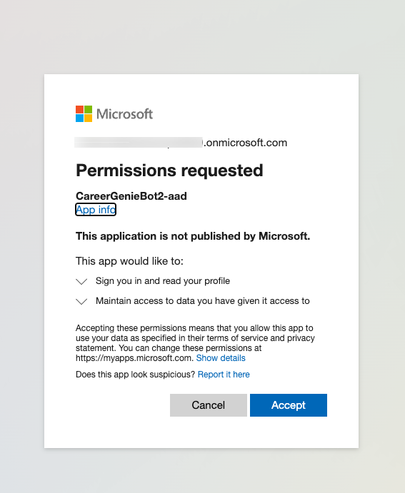
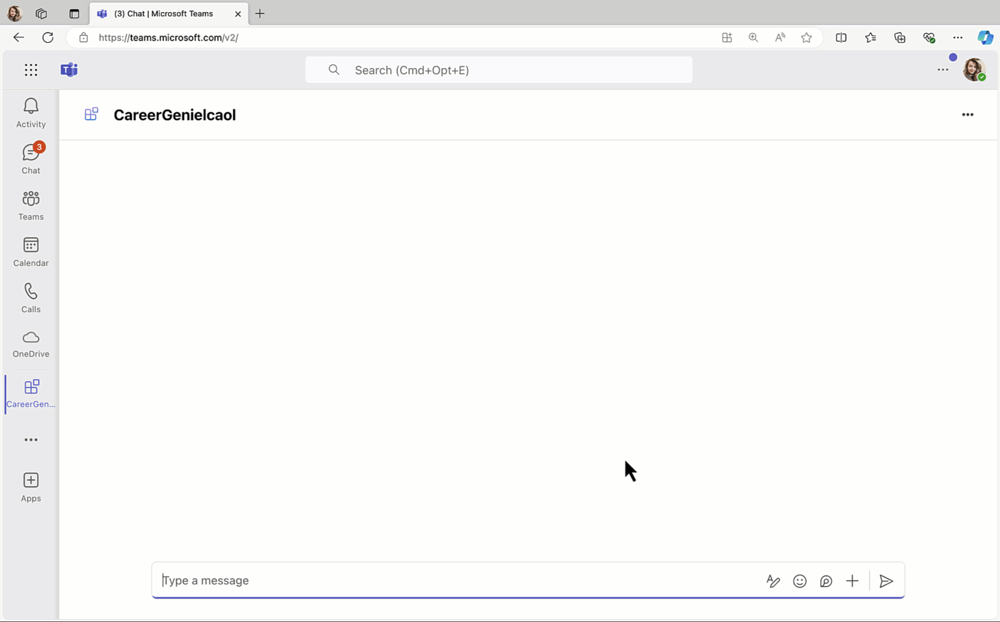

ラボ BTA4 - シングル サインオン認証の追加
このラボでは、Career Genie に Entra シングル サインオン ( SSO ) を実装し、取得したトークンを使用して Microsoft Graph API を呼び出し、ログインしているユーザー情報を取得する方法を学びます。
このラボで学ぶこと:
- アプリに Entra ID シングル サインオン ( SSO ) を追加し、ユーザーが Microsoft Teams と同じアカウントでシームレスにログインできるようにする
- Teams AI ライブラリと Bot Framework を使用して SSO を実装する
- アプリ ユーザーのトークンを取得して使用し、セキュリティとユーザー エクスペリエンスを向上させる
Azure OpenAI と Teams AI library を使用してカスタム AI モデルとオーケストレーションを備えた Custom エンジン エージェントを構築したい場合は、これらの ラボ を実施してください
はじめに
Career Genie を強化し、Entra ID (旧 Azure AD) シングル サインオン ( SSO ) を統合する準備をしましょう。これにより、アプリは Microsoft Graph を介して Microsoft 365 データにアクセスするためのトークンをシームレスに取得でき、スムーズな認証と認可を実現します。ここでは、Teams AI ライブラリと Bot Framework を使用し、特にマルチテナント構成に焦点を当てて SSO 機能を組み込みます。
Exercise 1: Entra ID シングル サインオン用にプロジェクトを設定する
Entra ID で保護されたアプリケーションは登録され、アクセス許可が付与されている必要があります。M365 Agents Toolkit がこの作業を行いますが、そのためにはプロジェクトを更新する必要があります。この演習では、M365 Agents Toolkit プロジェクト ファイルを変更して、Entra ID にアプリ登録をプロビジョニングします。
この演習では、Lab B3 のソース コード をベース プロジェクトとして使用し、次の手順を進めてください。
手順 1: Entra ID アプリを定義する App manifest ファイルを追加する
この手順では、M365 Agents Toolkit が Entra ID に登録するアプリケーションを定義するファイルを追加します。この manifest ファイルでは、アプリ登録のさまざまな側面をカスタマイズできます。たとえば、ここでは Microsoft Graph API の User.Read アクセス許可を設定し、アプリがユーザー プロファイルを読み取れるようにしています。
プロジェクト フォルダーのルートに aad.manifest.json ファイルを作成し、次の JSON を貼り付けます。
{
"id": "${{AAD_APP_OBJECT_ID}}",
"appId": "${{AAD_APP_CLIENT_ID}}",
"name": "CareerGenieBot-aad",
"accessTokenAcceptedVersion": 2,
"signInAudience": "AzureADMultipleOrgs",
"optionalClaims": {
"idToken": [],
"accessToken": [
{
"name": "idtyp",
"source": null,
"essential": false,
"additionalProperties": []
}
],
"saml2Token": []
},
"requiredResourceAccess": [
{
"resourceAppId": "Microsoft Graph",
"resourceAccess": [
{
"id": "User.Read",
"type": "Scope"
}
]
}
],
"oauth2Permissions": [
{
"adminConsentDescription": "Allows Teams to call the app's web APIs as the current user.",
"adminConsentDisplayName": "Teams can access app's web APIs",
"id": "${{AAD_APP_ACCESS_AS_USER_PERMISSION_ID}}",
"isEnabled": true,
"type": "User",
"userConsentDescription": "Enable Teams to call this app's web APIs with the same rights that you have",
"userConsentDisplayName": "Teams can access app's web APIs and make requests on your behalf",
"value": "access_as_user"
}
],
"preAuthorizedApplications": [
{
"appId": "1fec8e78-bce4-4aaf-ab1b-5451cc387264",
"permissionIds": [
"${{AAD_APP_ACCESS_AS_USER_PERMISSION_ID}}"
]
},
{
"appId": "5e3ce6c0-2b1f-4285-8d4b-75ee78787346",
"permissionIds": [
"${{AAD_APP_ACCESS_AS_USER_PERMISSION_ID}}"
]
},
{
"appId": "d3590ed6-52b3-4102-aeff-aad2292ab01c",
"permissionIds": [
"${{AAD_APP_ACCESS_AS_USER_PERMISSION_ID}}"
]
},
{
"appId": "00000002-0000-0ff1-ce00-000000000000",
"permissionIds": [
"${{AAD_APP_ACCESS_AS_USER_PERMISSION_ID}}"
]
},
{
"appId": "bc59ab01-8403-45c6-8796-ac3ef710b3e3",
"permissionIds": [
"${{AAD_APP_ACCESS_AS_USER_PERMISSION_ID}}"
]
},
{
"appId": "0ec893e0-5785-4de6-99da-4ed124e5296c",
"permissionIds": [
"${{AAD_APP_ACCESS_AS_USER_PERMISSION_ID}}"
]
},
{
"appId": "4765445b-32c6-49b0-83e6-1d93765276ca",
"permissionIds": [
"${{AAD_APP_ACCESS_AS_USER_PERMISSION_ID}}"
]
},
{
"appId": "4345a7b9-9a63-4910-a426-35363201d503",
"permissionIds": [
"${{AAD_APP_ACCESS_AS_USER_PERMISSION_ID}}"
]
}
],
"identifierUris":[
"api://botid-${{BOT_ID}}"
],
"replyUrlsWithType":[
{
"url": "https://${{BOT_DOMAIN}}/auth-end.html",
"type": "Web"
}
]
}
手順 2: Entra ID アプリを作成するように M365 Agents Toolkit 設定ファイルを更新する
teamsapp.local.yml ファイルを開きます。これは、M365 Agents Toolkit がプロジェクトを実行する際の手順を定義する YAML ファイルです。M365 Agents Toolkit の UI で「LIFECYCLE」セクションには 3 つのフェーズがあります。
- Provision ‐ このフェーズでは、ボット登録や Teams アプリ パッケージ、今回の Entra ID アプリ登録など、アプリに必要なインフラが作成されます。
- Deploy ‐ このフェーズでは、コードがローカルでビルド・実行されるか、ローカル以外の環境では Azure にアップロードされます。
- Publish ‐ このフェーズでは、アプリ パッケージが Microsoft Teams に発行されます。
Entra ID アプリをプロビジョニングするため、以下の行を teamsapp.local.yml の provision のすぐ下に追加します。
- uses: aadApp/create # Creates a new Entra ID (AAD) app to authenticate users if the environment variable that stores clientId is empty
with:
name: CareerGenieBot-aad # Note: when you run aadApp/update, the AAD app name will be updated based on the definition in manifest. If you don't want to change the name, make sure the name in AAD manifest is the same with the name defined here.
generateClientSecret: true # If the value is false, the action will not generate client secret for you
signInAudience: "AzureADMultipleOrgs" # Authenticate users with a Microsoft work or school account in your organization's Entra ID tenant (for example, single tenant).
writeToEnvironmentFile: # Write the information of created resources into environment file for the specified environment variable(s).
clientId: AAD_APP_CLIENT_ID
clientSecret: SECRET_AAD_APP_CLIENT_SECRET # Environment variable that starts with `SECRET_` will be stored to the .env.{envName}.user environment file
objectId: AAD_APP_OBJECT_ID
tenantId: AAD_APP_TENANT_ID
authority: AAD_APP_OAUTH_AUTHORITY
authorityHost: AAD_APP_OAUTH_AUTHORITY_HOST
続いて、botFramework/create の後に次の行を追加し、既存の AAD アプリを更新します。
- uses: aadApp/update # Apply the AAD manifest to an existing AAD app. Will use the object id in manifest file to determine which AAD app to update.
with:
manifestPath: ./aad.manifest.json # Relative path to teamsfx folder. Environment variables in manifest will be replaced before apply to AAD app
outputFilePath: ./build/aad.manifest.${{TEAMSFX_ENV}}.json
ヒント: YAML ではインデントが重要
YAML では適切なインデントが必須で、オブジェクト階層の各レベルをインデントして構造を示す必要があります。2 つの半角スペース (タブは使用しません) が推奨です。Visual Studio Code では赤い下線で構文エラーを示してくれるため、赤線が消えれば正しく記述できています。
次に、deploy フェーズ内の file/createOrUpdateEnvironmentFile ディレクティブを探し、前のラボで追加したもののすぐ下に次の変数を envs コレクションとして追加します。
BOT_DOMAIN: ${{BOT_DOMAIN}}
AAD_APP_CLIENT_ID: ${{AAD_APP_CLIENT_ID}}
AAD_APP_CLIENT_SECRET: ${{SECRET_AAD_APP_CLIENT_SECRET}}
AAD_APP_TENANT_ID: ${{AAD_APP_TENANT_ID}}
AAD_APP_OAUTH_AUTHORITY_HOST: ${{AAD_APP_OAUTH_AUTHORITY_HOST}}
AAD_APP_OAUTH_AUTHORITY: ${{AAD_APP_OAUTH_AUTHORITY}}
Exercise 2: Teams アプリ manifest に SSO を追加する
この演習では、Teams アプリ manifest を更新してシングル サインオンを追加します。
手順 1: SSO 用に Teams アプリ manifest を更新する
シングル サインオン処理では、Teams が Entra ID のアクセス トークンをアプリに渡します。ただし Teams がアクセス トークンを提供するには、アプリについて知っておく必要があります。具体的には、アプリケーション (クライアント) ID と Teams に接続されたボットの ID が必要です。そのため、これらの情報を Teams アプリ manifest に追加する必要があります。
./appPackage/manifest.json にある Teams アプリ manifest テンプレートを開き、次の内容を追加します。
"webApplicationInfo": {
"id": "${{BOT_ID}}",
"resource": "api://botid-${{BOT_ID}}"
}
validDomains ノードの下にカンマを付けて追加してください。
ここで、ボット ドメインからの Web ページを Teams に表示するよう設定する必要があります。これにより、Microsoft Graph へのアクセス許可をユーザーに取得するために使用される auth-start.html と auth-end.html へのアクセスが許可されます。これはユーザーが custom engine agent に最初にアクセスしたときのみ行われます。
そのため、ボットのドメイン ${{BOT_DOMAIN}} を validDomains 配列に追加します。これらの変更後、manifest.json ファイルの末尾は次のようになります。
"validDomains": [
"${{BOT_DOMAIN}}",
"*.botframework.com"
],
Exercise 3: アプリケーション コードを SSO に対応させる
この演習では、SSO プロセスに対応するようコードを変更します。
手順 1: 同意ダイアログ用の HTML ページを用意する
ユーザーがアプリに初めてアクセスするとき、アプリにプロファイル情報の読み取り権限を付与するための同意が必要です。これは Teams AI ライブラリによって行われ、ポップアップ ウィンドウが表示されます。ここで作成する HTML ページはそのポップアップに表示され、実際の同意処理は Entra ID にリダイレクトされます。
権限付与のポップアップ用コード スニペットは、公式の teams-ai library sample for Teams SSO から引用しています。
プロジェクトの src フォルダー内に public フォルダーを作成します。
auth-start.html ファイルを作成し、次の内容を貼り付けます。
<!--This file is used during the Teams Bot authentication flow to assist with retrieval of the access token.-->
<!--If you're not familiar with this, do not alter or remove this file from your project.-->
<html lang="en">
<head>
<title>Login Start Page</title>
<meta charset="utf-8" />
<meta name="viewport" content="width=device-width, initial-scale=1" />
</head>
<body>
<script type="text/javascript">
popUpSignInWindow();
async function popUpSignInWindow() {
// Generate random state string and store it, so we can verify it in the callback
let state = _guid();
localStorage.setItem('state', state);
localStorage.removeItem('codeVerifier');
var currentURL = new URL(window.location);
var clientId = currentURL.searchParams.get('clientId');
var tenantId = currentURL.searchParams.get('tenantId');
var loginHint = currentURL.searchParams.get('loginHint');
var scope = currentURL.searchParams.get('scope');
if (!loginHint) {
loginHint = '';
}
var originalCode = _guid();
var codeChallenge = await pkceChallengeFromVerifier(originalCode);
localStorage.setItem('codeVerifier', originalCode);
let queryParams = {
client_id: clientId,
response_type: 'code',
response_mode: 'fragment',
scope: scope,
redirect_uri: window.location.origin + '/auth-end.html',
nonce: _guid(),
login_hint: loginHint,
state: state,
code_challenge: codeChallenge,
code_challenge_method: 'S256'
};
let authorizeEndpoint = `https://login.microsoftonline.com/common/oauth2/v2.0/authorize?${toQueryString(queryParams)}`;
window.location.assign(authorizeEndpoint);
}
// Build query string from map of query parameter
function toQueryString(queryParams) {
let encodedQueryParams = [];
for (let key in queryParams) {
encodedQueryParams.push(key + '=' + encodeURIComponent(queryParams[key]));
}
return encodedQueryParams.join('&');
}
// Converts decimal to hex equivalent
function _decimalToHex(number) {
var hex = number.toString(16);
while (hex.length < 2) {
hex = '0' + hex;
}
return hex;
}
// Generates RFC4122 version 4 guid (128 bits)
function _guid() {
// RFC4122: The version 4 UUID is meant for generating UUIDs from truly-random or
// pseudo-random numbers.
// The algorithm is as follows:
// Set the two most significant bits (bits 6 and 7) of the
// clock_seq_hi_and_reserved to zero and one, respectively.
// Set the four most significant bits (bits 12 through 15) of the
// time_hi_and_version field to the 4-bit version number from
// Section 4.1.3. Version4
// Set all the other bits to randomly (or pseudo-randomly) chosen
// values.
// UUID = time-low "-" time-mid "-"time-high-and-version "-"clock-seq-reserved and low(2hexOctet)"-" node
// time-low = 4hexOctet
// time-mid = 2hexOctet
// time-high-and-version = 2hexOctet
// clock-seq-and-reserved = hexOctet:
// clock-seq-low = hexOctet
// node = 6hexOctet
// Format: xxxxxxxx-xxxx-4xxx-yxxx-xxxxxxxxxxxx
// y could be 1000, 1001, 1010, 1011 since most significant two bits needs to be 10
// y values are 8, 9, A, B
var cryptoObj = window.crypto || window.msCrypto; // for IE 11
if (cryptoObj && cryptoObj.getRandomValues) {
var buffer = new Uint8Array(16);
cryptoObj.getRandomValues(buffer);
//buffer[6] and buffer[7] represents the time_hi_and_version field. We will set the four most significant bits (4 through 7) of buffer[6] to represent decimal number 4 (UUID version number).
buffer[6] |= 0x40; //buffer[6] | 01000000 will set the 6 bit to 1.
buffer[6] &= 0x4f; //buffer[6] & 01001111 will set the 4, 5, and 7 bit to 0 such that bits 4-7 == 0100 = "4".
//buffer[8] represents the clock_seq_hi_and_reserved field. We will set the two most significant bits (6 and 7) of the clock_seq_hi_and_reserved to zero and one, respectively.
buffer[8] |= 0x80; //buffer[8] | 10000000 will set the 7 bit to 1.
buffer[8] &= 0xbf; //buffer[8] & 10111111 will set the 6 bit to 0.
return (
_decimalToHex(buffer[0]) +
_decimalToHex(buffer[1]) +
_decimalToHex(buffer[2]) +
_decimalToHex(buffer[3]) +
'-' +
_decimalToHex(buffer[4]) +
_decimalToHex(buffer[5]) +
'-' +
_decimalToHex(buffer[6]) +
_decimalToHex(buffer[7]) +
'-' +
_decimalToHex(buffer[8]) +
_decimalToHex(buffer[9]) +
'-' +
_decimalToHex(buffer[10]) +
_decimalToHex(buffer[11]) +
_decimalToHex(buffer[12]) +
_decimalToHex(buffer[13]) +
_decimalToHex(buffer[14]) +
_decimalToHex(buffer[15])
);
} else {
var guidHolder = 'xxxxxxxx-xxxx-4xxx-yxxx-xxxxxxxxxxxx';
var hex = '0123456789abcdef';
var r = 0;
var guidResponse = '';
for (var i = 0; i < 36; i++) {
if (guidHolder[i] !== '-' && guidHolder[i] !== '4') {
// each x and y needs to be random
r = (Math.random() * 16) | 0;
}
if (guidHolder[i] === 'x') {
guidResponse += hex[r];
} else if (guidHolder[i] === 'y') {
// clock-seq-and-reserved first hex is filtered and remaining hex values are random
r &= 0x3; // bit and with 0011 to set pos 2 to zero ?0??
r |= 0x8; // set pos 3 to 1 as 1???
guidResponse += hex[r];
} else {
guidResponse += guidHolder[i];
}
}
return guidResponse;
}
}
// Calculate the SHA256 hash of the input text.
// Returns a promise that resolves to an ArrayBuffer
function sha256(plain) {
const encoder = new TextEncoder();
const data = encoder.encode(plain);
return window.crypto.subtle.digest('SHA-256', data);
}
// Base64-urlencodes the input string
function base64urlencode(str) {
// Convert the ArrayBuffer to string using Uint8 array to convert to what btoa accepts.
// btoa accepts chars only within ascii 0-255 and base64 encodes them.
// Then convert the base64 encoded to base64url encoded
// (replace + with -, replace / with _, trim trailing =)
return btoa(String.fromCharCode.apply(null, new Uint8Array(str)))
.replace(/\+/g, '-')
.replace(/\//g, '_')
.replace(/=+$/, '');
}
// Return the base64-urlencoded sha256 hash for the PKCE challenge
async function pkceChallengeFromVerifier(v) {
hashed = await sha256(v);
return base64urlencode(hashed);
}
</script>
</body>
</html>
auth-end.html ファイルを作成し、次の内容を貼り付けます。
<html lang="en">
<head>
<title>Login End Page</title>
<meta charset="utf-8" />
<meta name="viewport" content="width=device-width, initial-scale=1" />
</head>
<body>
<script
src="https://statics.teams.cdn.office.net/sdk/v1.6.0/js/MicrosoftTeams.min.js"
integrity="sha384-mhp2E+BLMiZLe7rDIzj19WjgXJeI32NkPvrvvZBrMi5IvWup/1NUfS5xuYN5S3VT"
crossorigin="anonymous"
></script>
<div id="divError"></div>
<script type="text/javascript">
microsoftTeams.initialize();
let hashParams = getHashParameters();
if (hashParams['error']) {
// Authentication failed
handleAuthError(hashParams['error'], hashParams);
} else if (hashParams['code']) {
// Get the stored state parameter and compare with incoming state
let expectedState = localStorage.getItem('state');
if (expectedState !== hashParams['state']) {
// State does not match, report error
handleAuthError('StateDoesNotMatch', hashParams);
} else {
microsoftTeams.authentication.notifySuccess();
}
} else {
// Unexpected condition: hash does not contain error or access_token parameter
handleAuthError('UnexpectedFailure', hashParams);
}
// Parse hash parameters into key-value pairs
function getHashParameters() {
let hashParams = {};
location.hash
.substr(1)
.split('&')
.forEach(function (item) {
let s = item.split('='),
k = s[0],
v = s[1] && decodeURIComponent(s[1]);
hashParams[k] = v;
});
return hashParams;
}
// Show error information
function handleAuthError(errorType, errorMessage) {
const err = JSON.stringify({
error: errorType,
message: JSON.stringify(errorMessage)
});
let para = document.createElement('p');
let node = document.createTextNode(err);
para.appendChild(node);
let element = document.getElementById('divError');
element.appendChild(para);
}
</script>
</body>
</html>
手順 2: SSO を処理するコードを更新する
- index.ts ファイルの変更点:
path をインポートして public フォルダーから静的ファイルを提供します。
import * as path from 'path';
expressApp.listen メソッドで server オブジェクトを初期化する行の直後に、次のコードを追加します。
const authFilePattern = /^\/auth-(start|end)\.html$/;
expressApp.get(
authFilePattern, (req, res) => {
const fileName = req.path;
const filePath = path.join(__dirname, 'public', fileName);
res.sendFile(filePath);
});
-
adapter.ts ファイルの変更点:
-
teams-ai ライブラリから
TeamsAdapterをインポートします。```TypeScript import { TeamsAdapter } from '@microsoft/teams-ai';
- アダプター定義を `CloudAdapter` から Teams SSO 用の `TeamsAdapter` に置き換えます。
```JavaScript
const adapter = new TeamsAdapter(
{},
new ConfigurationServiceClientCredentialFactory({
MicrosoftAppId: config.MicrosoftAppId,
MicrosoftAppPassword: config.MicrosoftAppPassword,
MicrosoftAppType: 'MultiTenant',
})
);
-
不要になった
botFrameworkAuthenticationの定義をコメント アウトします。 -
config.ts ファイルの変更点:
-
定数
configに次のプロパティを追加します。process.env.INDEX_NAMEの後ろにカンマを付けて下記スニペットを追記してください。```TypeScript aadAppClientId: process.env.AAD_APP_CLIENT_ID, aadAppClientSecret: process.env.AAD_APP_CLIENT_SECRET, aadAppOauthAuthorityHost: process.env.AAD_APP_OAUTH_AUTHORITY_HOST, aadAppTenantId: process.env.AAD_APP_TENANT_ID, botDomain: process.env.BOT_DOMAIN, aadAppOauthAuthority: process.env.AAD_APP_OAUTH_AUTHORITY,
- **app.ts** ファイルの変更点:
- `@microsoft/teams-ai` ライブラリから `TurnState` と `AuthError` をインポートします。
```TypeScript
import { Application, ActionPlanner, OpenAIModel, PromptManager, AI, PredictedSayCommand, AuthError, TurnState } from "@microsoft/teams-ai";
-
認証設定を渡すため、
const appの定義を次のコードに置き換えます。``TypeScript const app = new Application({ storage, authentication: {settings: { graph: { scopes: ['User.Read'], msalConfig: { auth: { clientId: config.aadAppClientId!, clientSecret: config.aadAppClientSecret!, authority:${config.aadAppOauthAuthorityHost}/common} }, signInLink:https://${config.botDomain}/auth-start.html`, endOnInvalidMessage: true } }}, ai: { planner, //feedback loop is enabled enable_feedback_loop: true }, });
Teams AI ライブラリは custom engine agent と Microsoft Teams 間のトークン交換を処理するため、トークンを受け取ったらすぐに Microsoft Graph を呼び出せます。
続いて、Teams AI ライブラリを使用して各種認証およびメッセージ イベントを定義・処理するコードを追加します。`app` 定義の後に次のコードを貼り付けます。
```TypeScript
interface ConversationState {
count: number;
}
type ApplicationTurnState = TurnState<ConversationState>;
app.authentication.get('graph').onUserSignInSuccess(async (context: TurnContext, state: ApplicationTurnState) => {
const token = state.temp.authTokens['graph'];
await context.sendActivity(`Hello ${await getUserDisplayName(token)}. You have successfully logged in to CareerGenie!`);
});
app.authentication
.get('graph')
.onUserSignInFailure(async (context: TurnContext, _state: ApplicationTurnState, error: AuthError) => {
await context.sendActivity('Failed to login');
await context.sendActivity(`Error message: ${error.message}`);
});
// Listen for user to say '/reset' and then delete conversation state
app.message('/reset', async (context: TurnContext, state: ApplicationTurnState) => {
state.deleteConversationState();
await context.sendActivity(`Ok I've deleted the current conversation state.`);
});
app.message('/signout', async (context: TurnContext, state: ApplicationTurnState) => {
await app.authentication.signOutUser(context, state);
// Echo back users request
await context.sendActivity(`You have signed out`);
});
上記コードでは、トークンを正常に受け取った後に Microsoft Graph を呼び出してユーザー情報を取得する getUserDisplayName() 関数を呼び出しています。まず Graph SDK をインストールしましょう。
ターミナルで次のスクリプトを実行します。
npm install @microsoft/microsoft-graph-client @microsoft/microsoft-graph-types
次に、app.ts ファイルでパッケージから必要なモジュールをインポートします。
import { Client } from "@microsoft/microsoft-graph-client";
app.message メソッドの後に次のコード スニペットを貼り付けます。
async function getUserDisplayName(token: string): Promise<string | undefined> {
let displayName: string | undefined;
const client = Client.init({
authProvider: (done) => {
done(null, token);
}
});
try {
const user = await client.api('/me').get();
displayName = user.displayName;
} catch (error) {
console.log(`Error calling Graph SDK in getUserDisplayName: ${error}`);
}
return displayName;
}
このアプリをシングル テナントのみに対応させる場合は以下を変更してください
aad.manifest.jsonのsignInAudienceノードを"signInAudience": "AzureADMyOrg"に更新teamsapp.local.ymlのaadApp\createにあるsignInAudienceを"signInAudience: "AzureADMyOrg"に更新src\app\app.tsのアプリケーション定義内 auth 設定のauthorityをauthority: config.aadAppOauthAuthorityに更新src\public\auth-start.htmlのauthorizeEndpoint変数をhttps://login.microsoftonline.com/${tenantId}/oauth2/v2.0/authorize?${toQueryString(queryParams)}に設定src\adapter.tsのアダプター定義をMicrosoftAppType: 'SingleTenant'に更新
Exercise 4: アプリを実行する
これで Career Genie に Teams SSO を実装するためのコードが完成しました。実際に動作を確認しましょう。
手順 1: Teams へのアプリのインストール
Visual Studio Code の Run and Debug タブで Debug in Teams ( Edge ) または Debug in Teams ( Chrome ) を選択し、デバッグを開始します。ブラウザーで Microsoft Teams が開き、アプリの詳細が表示されたら Add を選択してチャットを開始します。
ヒント: この演習をローカルでテストする場合
これまで実装してきた Teams AI ライブラリの一部機能は、Teams App Test Tool では円滑に動作しません。必ずローカルの Teams 上でテストおよびデバッグしてください。
手順 2: 同意の付与
Career Genie との会話を開始するには、メッセージを入力します。たとえば「Hi」と入力して送信してみてください。
ヒント: ブラウザーのポップアップ設定を確認する
以下の手順をスムーズに行うため、ブラウザーで Pop up がブロックされていないことを確認してください。
追加のアクセス許可を求める小さなダイアログ ボックスが表示され、「Cancel」と「Continue」のボタンが並びます。これはログインとアクセス許可同意のためのダイアログです。Continue を選択します。

既知の問題
- Teams チャットで同意ダイアログが表示されるまでに遅延が発生することがあります。これはプラットフォームの問題として認識しており、監視中です。2～3 回メッセージを送信してください。
ローカル環境で Developer Tunnels を使用している場合は警告画面が表示されます。Continue を選択してください。本番環境ではユーザーには表示されません。

次に Entra ID にリダイレクトされ、アプリのアクセス許可に同意する画面が表示されます。(これは、同意がまだないことを検出した public/auth-start.html からリダイレクトされています)。

ヒント: 組織全体で同意する
Microsoft 365 管理者の場合、「Consent on behalf of your organization」を選択してテナント内のすべてのユーザーに対して同意を付与することもできます。
Accept を選択してアクセス許可に同意し、Career Genie を実行します。
ログインが成功すると、custom engine agent からログイン名が表示されたメッセージが届きます。

これで custom engine agent と会話を開始できます。
おめでとうございます！
シングル サインオン認証を追加して custom engine agent を保護するラボ BTA4 を完了しました! さらに詳しく調べたい場合は、このラボのソース コードが Copilot Developer Camp リポジトリ にあります。
次のラボ BTA5 - 複雑なタスクを処理するアクションの追加 に進みましょう。Next を選択してください。